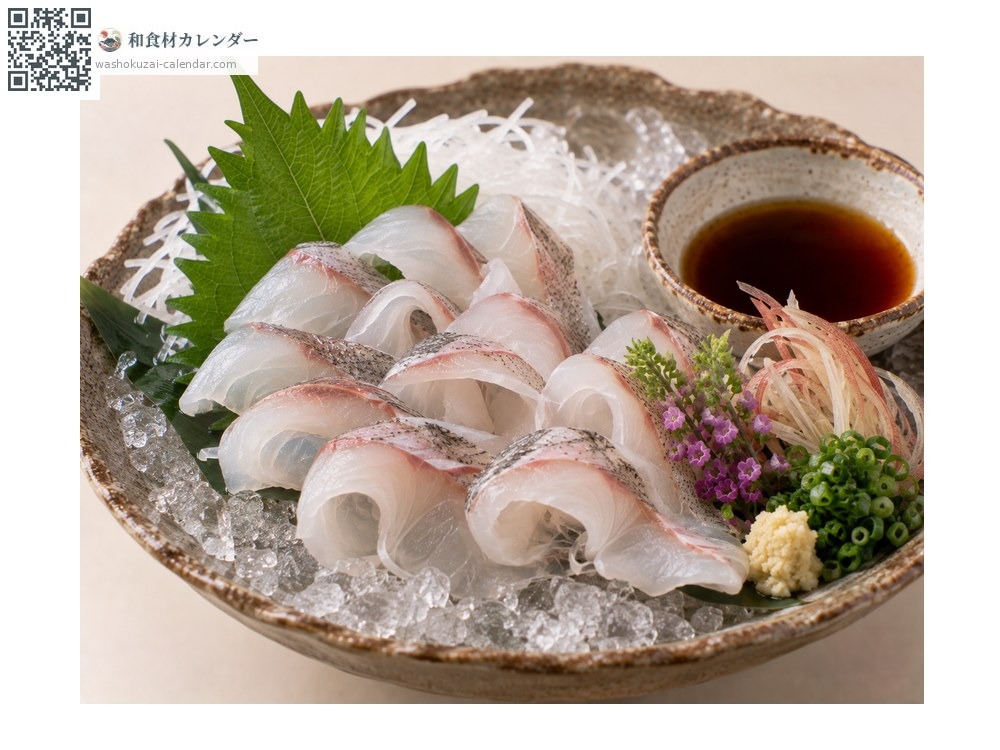
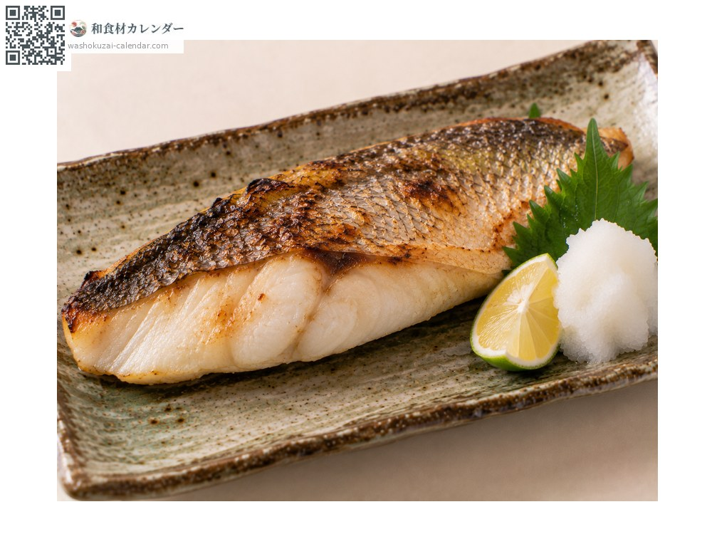
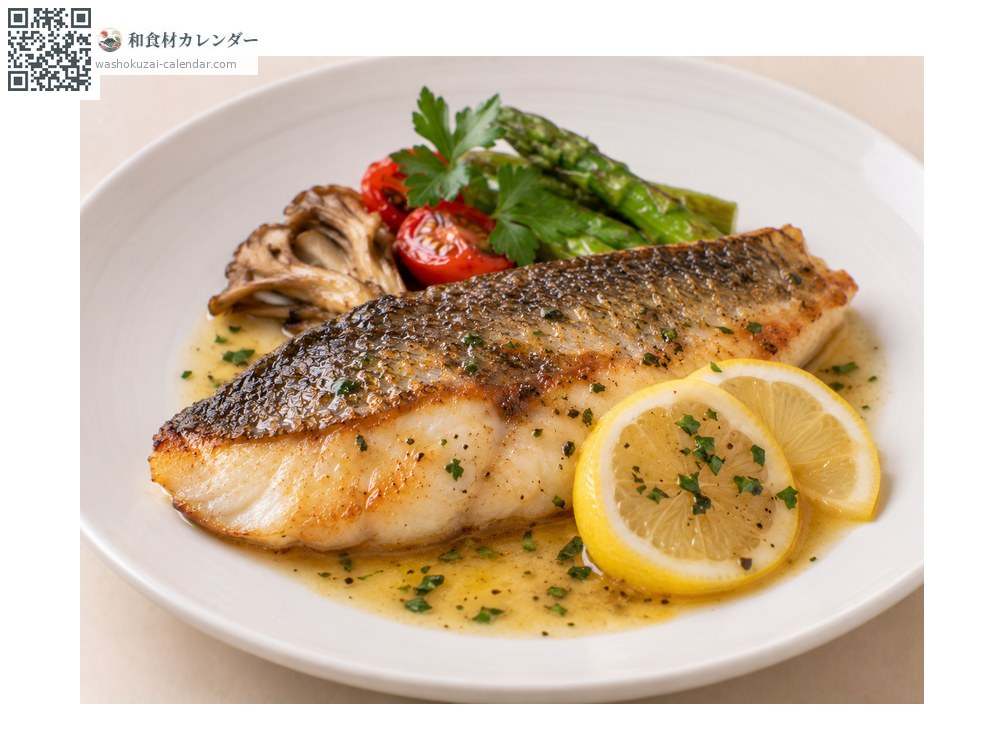
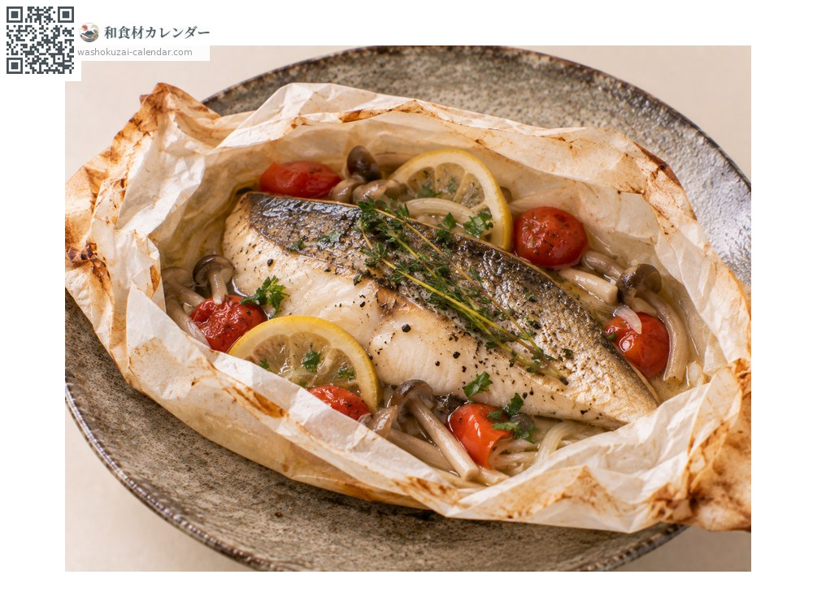

อาหารทะเล
ปลากะพงญี่ปุ่น (ซุซุกิ)
スズキ すずき
อร่อยที่สุดในเดือน มิ.ย., ก.ค., ส.ค.

ช่วงที่อร่อยที่สุด
ม.ค.
ก.พ.
มี.ค.
เม.ย.
พ.ค.
มิ.ย.
ก.ค.
ส.ค.
ก.ย.
ต.ค.
พ.ย.
ธ.ค.
ช่วงอร่อยที่สุดมีจำหน่าย
วิธีปรุง

อาราอิ (แช่น้ำแข็ง)
หั่นบางแล้วแช่น้ำแข็ง เป็นเมนูประจำฤดูร้อน เนื้อจะกรุบ

ย่างเกลือ
ย่างด้านหนังให้หอม เนื้อรสอ่อนและฟูนุ่ม

มูนิแยร์
ทอดเนย เนื้อรสอ่อนเข้ากับการปรุงแบบตะวันตก

ห่อกระดาษอบ
ห่อกับผักหอมในกระดาษหรือฟอยล์แล้วอบ กลิ่นจะซึมเข้าเนื้อ
วิธีเลือก
ลำตัวเป็นประกายสีเงิน เหงือกสีแดงสด ตาใสและท้องแน่น
วิธีเก็บรักษา
ควักไส้แล้วแช่เย็น เนื้อมีน้ำมาก โรยเกลือก่อนเก็บจะแน่นขึ้น ใช้ภายใน 2 วัน
แหล่งผลิตหลัก
เกร็ดน่ารู้
เป็นปลาที่เปลี่ยนชื่อตามขนาด เรียกเซโงะ ฟุกโกะ แล้วจึงเป็นซุซุกิ ฤดูของมันคือฤดูร้อน ที่เกียวโตถือเป็นปลาประจำหน้าร้อนเคียงคู่กับปลาฮาโมะ
วัตถุดิบที่อร่อยที่สุดในช่วงเดียวกัน
 ปลาอาจิ (ปลาทูแขกญี่ปุ่น)
ปลาอาจิ (ปลาทูแขกญี่ปุ่น) ปลาชิมะอาจิ (ปลาสำลีแถบเหลือง)
ปลาชิมะอาจิ (ปลาสำลีแถบเหลือง) ปลาอิวาชิ (ปลาซาร์ดีนญี่ปุ่น)
ปลาอิวาชิ (ปลาซาร์ดีนญี่ปุ่น) ปลาโคฮาดะ (ปลาตะลุมพุกญี่ปุ่น)
ปลาโคฮาดะ (ปลาตะลุมพุกญี่ปุ่น) ปลาคัมปาจิ (ปลาหางเหลืองครีบยาว)
ปลาคัมปาจิ (ปลาหางเหลืองครีบยาว) ทูน่าครีบเหลือง
ทูน่าครีบเหลือง ปลาบิน
ปลาบิน ปลาอิชิได (ปลาจะละเม็ดลายขวาง)
ปลาอิชิได (ปลาจะละเม็ดลายขวาง)